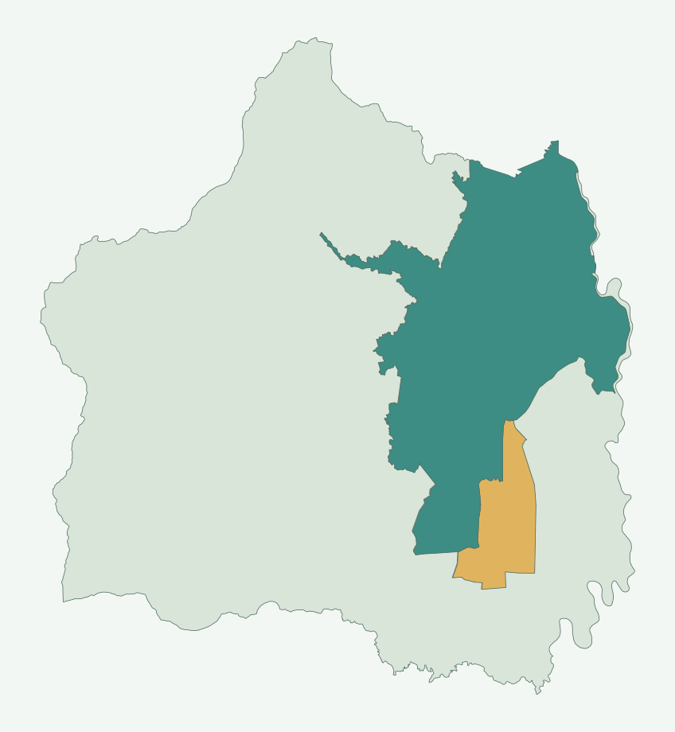
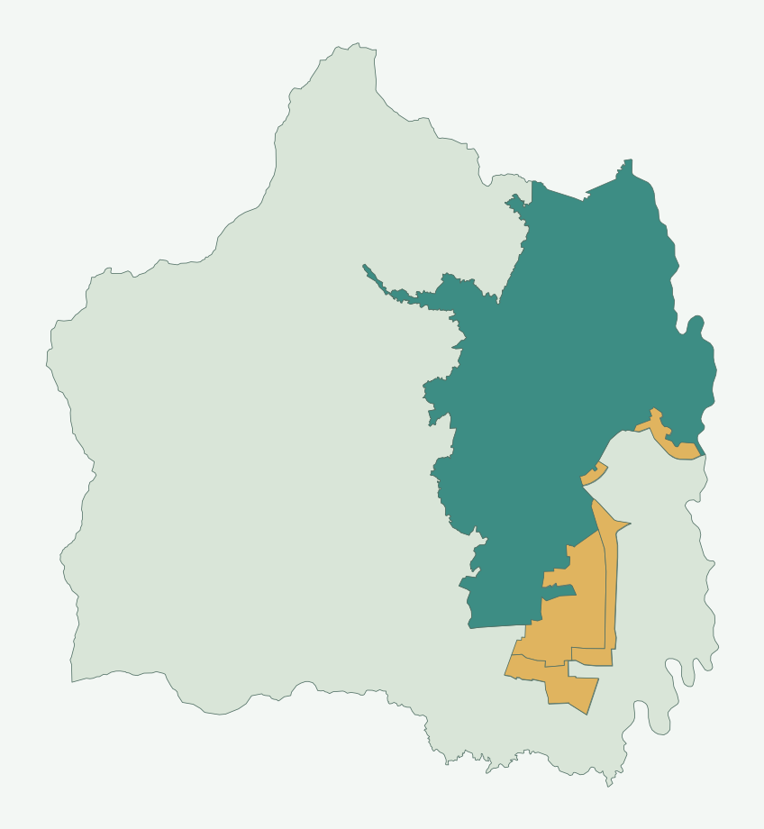

¿La ciudad crece hacia afuera o aprovecha su suelo urbano?
Contrastar expansión, consolidación y renovación, sin suponer que más suelo disponible equivale a mejor acceso a vivienda y servicios.
Un plan de ordenamiento decide dónde se puede construir, qué se protege, qué infraestructura se exige y cómo se reparten los beneficios de transformar el suelo. Aquí contrastamos la propuesta de 2026 con el POT vigente.
Verificamos normas, cesiones, instrumentos, incentivos y garantías para quienes ya viven en el territorio.
Comparación cartográfica 2014–2026 calculada a partir de las dos geodatabases. El proyecto de 2026 todavía no es norma vigente.
Resumen visual compacto de los límites urbano, rural y de expansión. Puedes ampliarlo en el comparador. Ambos mapas usan la misma proyección, escala y extensión.


Cómo leerlos: el amarillo corresponde al suelo de expansión y el azul verdoso al perímetro urbano. Las diferencias son cartográficas y no significan que un terreno ya esté urbanizado o tenga licencia. *La GDB del POT 2014 disponible contiene actualizaciones posteriores a su adopción; el suelo rural de esa fecha se representa mediante una diferencia geométrica sobre el perímetro municipal.
Superficies calculadas con las geometrías originales de 2014 y 2026 en un sistema proyectado común. La categoría rural de 2014 se derivó como área municipal menos suelo urbano y de expansión; las delimitaciones municipales difieren entre las fuentes.
Intersecciones espaciales de ambas geodatabases, con hectáreas y porcentajes.
Lectura de artículos sobre planes parciales, renovación y vías de actuación.
Calculado con perímetros urbanos y de expansión de ambas geodatabases. El mapa permite visualizar las diferencias.
La fuente aportada contiene estructura de campos, pero no polígonos.
Contrastar expansión, consolidación y renovación, sin suponer que más suelo disponible equivale a mejor acceso a vivienda y servicios.
Examinar la relación entre aprovechamientos, planes parciales, cesiones, incentivos y obligaciones públicas.
Verificar si existen medidas explícitas de protección a moradores, permanencia y prevención de desplazamiento.
Contrastar las decisiones urbanísticas con riesgo, efectos sísmicos y necesidad de estudios técnicos detallados.
Qué establecía el POT vigente, qué propone 2026 y qué significa para tu barrio. Los gráficos conservan las hectáreas y porcentajes de superficie.
¿Quién puede desarrollar el suelo, qué requisitos debe cumplir, qué recibe como incentivo y qué se garantiza a los habitantes actuales?
Qué amenazas y condicionamientos se han cartografiado en tu barrio, qué significa la microzonificación sísmica y qué requisitos deben verificarse.